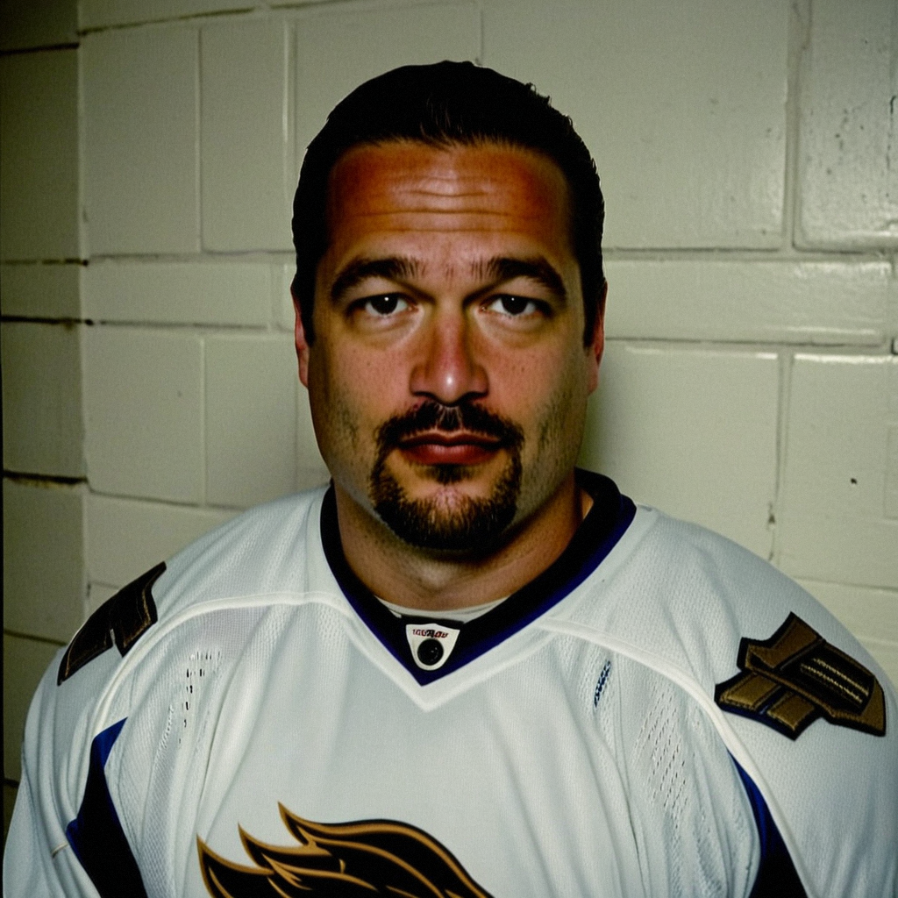

Kolzig on the road win in Buffalo: 'We score five, my job is easy'
After a 5-1 win at Buffalo, the reigning Vezina winner talks about the third period that never came, and why a .500 road record has to get better.
 Jan KowalczykRinkside reporter and studio host · The Tunnel
Jan KowalczykRinkside reporter and studio host · The Tunnel
2:04 · synthetic voices, produced from the record · download
 Olaf Kolzig93 stopped 23 of 24 as
Olaf Kolzig93 stopped 23 of 24 as  Washington Capitals won 5-1 at
Washington Capitals won 5-1 at  Buffalo Sabres on 2004-12-07, with Simon Gamache scoring twice. The win moved Washington to 8-8 away from home. Jan Kowalczyk caught the goaltender in the tunnel before the bus.
Buffalo Sabres on 2004-12-07, with Simon Gamache scoring twice. The win moved Washington to 8-8 away from home. Jan Kowalczyk caught the goaltender in the tunnel before the bus.
Transcript
Jan Kowalczyk for The Tunnel, down here by the visitors' room in Buffalo with Olaf Kolzig. Olie, 5-1 tonight, 23 saves for you. How does that one feel?
Yeah, good. Good, you know. On the road you take the win, you don't complain. The boys, they score early, and for me it is, it is easier game. You see the puck, you make the stops, and the score, it does the rest.
You're up going into the third and Buffalo's at home, they want to give the crowd something. How did you see that period?
Well, we talk about it in the room, you know, between the second and third. They will push. Home team always push. But I think we were smart. We don't give them the, the odd-man rush, we keep the puck deep, and when they come, it is from outside. One goal, okay. But that's all they get.
That one goal, does it bother you on a night like this?
A little bit, sure. You want the zero, every goalie wants the zero. But I have no shutout yet this season, so I am used to waiting. It will come. Tonight the win is more, is more important than my number.
Simon Gamache had two goals for you tonight. What did you see from him?
Yeah, Simon, he was, he was flying. First goal, he is in the right spot, you know, he don't wait for the puck, he goes to it. When a guy plays like that on the road, everybody, everybody lifts. You see it on the bench.
This building, this trip. You're 8-8 on the road now. What is the road like for this group?
Ah, it is hard. Every building is loud, the ice is a little different, and the other team, they sleep in their own bed and we don't. Eight and eight, it is, it is okay. But okay is not enough. If we want to be there in April, we must win more on the road. Tonight is a step, you know.
You've been with this club a long time. Does a night like tonight in Buffalo still mean what it meant ten years ago?
Yeah. Yeah, it does. You play long enough, people think you get, uh, tired of it. No. The puck drops, I want to win. Same in Buffalo, same in Washington. Maybe my body is different , but this part, this is same.
Last one. The Vezina from last season, does it follow you around, into games like this?
No, no. The trophy is at home. You know, it don't stop pucks for me. Every night you start from zero. Tonight we get the two points, and tomorrow we think about the next one.
Olie Kolzig, thanks for the time. Back to you.